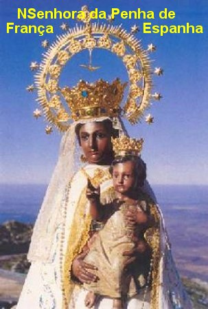

PRELÚDIO

A primeira manifestação Divina sob a invocação de NOSSA SENHORA DA PENHA aconteceu na Europa e mais precisamente na Espanha, na Província de Salamanca. A grande cadeia de montanhas que se ramifica pelo país e que alcança esta região espanhola, tem a Serra de França (Sierra de Francia ) com diversas elevações e penhascos, que os espanhóis denominam de “Peñas”(em português traduzimos por Penha, Penhascos). São grandes montanhas e para se conhecer corretamente o sentido da palavra, o Dicionário Aurélio explica: a palavra penhas ou penha, significa penedo, grande rocha, penhasco. Então se trata de uma montanha elevada, por exemplo, tipo do Pico da Bandeira, na Serra do Caparaó, entre os Estados do Espírito Santo e Estado de Minas Gerais, aqui no Brasil. Isto significa dizer que a “Peña de Francia”, ou seja, o Penhasco da França quer significar que se trata de uma Grande Rocha, com 1.723 metros de altura, em relação ao nível do mar, na Província de Salamanca na Espanha. Por essa razão, NOSSA SENHORA se manifestando nesta região recebeu o nome: DA PENHA DE FRANÇA, quer dizer do rochedo da serra de França. Aqui no Brasil, os acontecimentos foram semelhantes e o povo se habituou a se referir ao nome de NOSSA SENHORA DA PENHA, pelo fato da localização da imagem da MÃE DE DEUS se encontrar num Templo no alto de um rochedo (no alto de uma penha), como são os casos de Vila Velha no Espírito Santo e também, no Rio de Janeiro. Entretanto existem Santuários, Igrejas e Capelas, também entregues a proteção de NOSSA SENHORA DA PENHA, que não se encontram no alto de um penhasco, como é o caso do Santuário de São Paulo e uma quantidade notável de Templos espalhados em diversas regiões do Brasil. Assim sendo, na Espanha, a MÃE DE DEUS desejando permanecer no alto da Penha, ou seja, da Serra de França, recebeu naturalmente o nome de NOSSA SENHORA DA PENHA DE FRANÇA. Mas é a mesma MÃE DE DEUS, embora se apresente com fisionomia diferente, também com desigual cor da pele e de vestuário. Isto acontece essencialmente para marcar de modo indelével a presença Divina no local, e como sempre ocorre, em cada região, a VIRGEM MÃE acolhe carinhosamente as súplicas de seus filhos, revelando a grandeza e a ternura de um imenso amor materno, se constituindo numa preciosa e perene fonte de graças que derrama torrencialmente sob a forma de benefícios, assim como de proteção e cuidados, a todos aqueles que buscam a sua inefável e tão querida proteção.
O monge francês Simon Rolán, também apelidado Rochão, foi quem recebeu a mensagem da VIRGEM para procurar a imagem na “Peña de Francia” (na Espanha), e em face de ter repetido uma infinidade de vezes a recomendação de NOSSA SENHORA: “Simão, vela e não durmas”, a qual também lhe estimulava a não desanimar na busca, apesar das imensas dificuldades que encontrou, "Vela" foi anexado ao seu nome, como sobrenome. Esta palavra, conforme diz o Dicionário Aurélio, vem do verbo Velar, que significa permanecer acordado, vigiar, estar aceso, estar ligado, se preocupar, zelar. Por isso, historicamente Simão passou a ser conhecido como “Simão Vela”.
A Devoção a MÃE DE DEUS sob a invocação de NOSSA SENHORA DA PENHA se espalhou em diversos países do mundo, e aqui no Brasil, praticamente é cultivada em todos os Estados da Federação. Nas cidades, de cada Estado, não é difícil encontrar um Santuário, uma Igreja ou mesmo uma Capela colocada sob a proteção de NOSSA SENHORA DA PENHA. Por isso, aqui neste Site vamos apresentar com a maior dimensão possível, os Templos de NOSSA SENHORA DA PENHA na Espanha, em Vila Velha no Espírito Santo, no Rio de Janeiro e em São Paulo, que são os mais importantes, e no final, será feita algumas referências a outros Templos Marianos também entregues a proteção de NOSSA SENHORA DA PENHA.
APOSTOLADO DOS SAGRADOS CORAÇÕES
http://www.apostoladosagradoscoracoes.com/